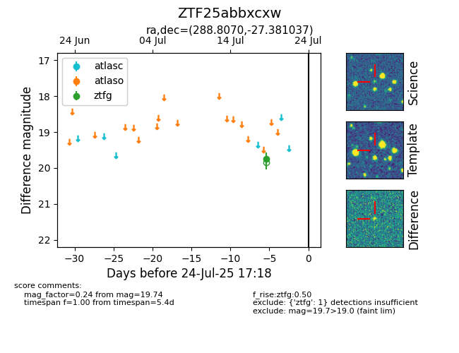

Target ZTF25abbxcxw at 2025-07-24 17:18, see:
FINK: fink-portal.org/ZTF25abbxcxw
Lasair: lasair-ztf.lsst.ac.uk/objects/ZTF25abbxcxw
ALeRCE: alerce.online/object/ZTF25abbxcxw
alt names
ZTF25abbxcxw (ztf,fink)
coordinates:
equatorial (ra, dec) = (288.8070,-27.38104)
galactic (l, b) = (10.3474,-16.95358)
photometry
last ztfg=19.74
1 ztfg detections
